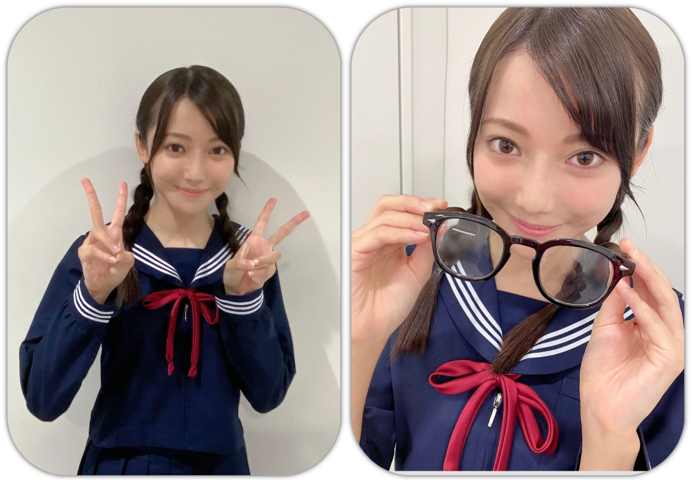

<?xml version="1.0" encoding="utf-8"?>
<!DOCTYPE html PUBLIC "-//W3C//DTD XHTML 1.0 Transitional//EN" "http://www.w3.org/TR/xhtml1/DTD/xhtml1-transitional.dtd">
<html xmlns="http://www.w3.org/1999/xhtml" lang="ja" xml:lang="ja" xmlns:og="http://ogp.me/ns#" xmlns:mixi="http://mixi-platform.com/ns#" xmlns:fb="http://www.facebook.com/2008/fbml">
<head><link rel="icon" href="https://i.imgur.com/SSCvFsr.jpg" ype="image/jpg" /><meta http-equiv="Content-Type" content="text/html; charset=UTF-8" />

<meta http-equiv="Content-Style-Type" content="text/css" />
<meta http-equiv="Content-Script-Type" content="text/javascript" />
<meta http-equiv="Content-Language" content="ja" />
<meta name="robots" content="ALL" /><meta name="viewport" content="width=1024" />
<link href="https://blog.nogizaka46.com/shared.css?ver20200427" type="text/css" rel="stylesheet" media="screen,tv,print" />
<script type="text/javascript" src="https://blog.nogizaka46.com/js/prototype.js"></script>
<script type="text/javascript" src="https://blog.nogizaka46.com/js/ajaxCalendar.js"></script>
<script type="text/javascript" src="https://blog.nogizaka46.com/js/dayChecker.js"></script>
<script type="text/javascript" src="https://blog.nogizaka46.com/js/shared.js"></script>
<!--[if lte IE 6]>
<script type="text/javascript" src="../../../js/DD_belatedPNG_0.0.8a-min.js"></script>
<script type="text/javascript">DD_belatedPNG.fix("img,h2,.iepngfix");</script>
<![endif]-->
<meta name="description" xml:lang="ja" lang="ja" content="私たちには、超えなければならない目標がある！" />
<meta name="keywords" xml:lang="ja" lang="ja" content="新4期生リレー,乃木坂46,乃木坂,AKB48公式ライバル,AKB48,nogizaka46,nogizaka,乃木坂ってどこ,ぐるぐるカーテン,会いたかったかもしれない,左胸の勇気,乃木坂の詩,失いたくないから" />
<meta property="og:title" content="あと１日、あと４日 ・・・お願い、時よ止まってよ！ 黒見明香 | 乃木坂46 新4期生リレー 公式ブログ" />
<link rel="alternate" type="application/atom+xml" title="Recent Entries" href="https://blog.nogizaka46.com/newfourth/atom.xml" />
<link rel="mixi-check-alternate" media="mixi-device-mobile" type="text/html" href="../../index.html" />
<link rel="mixi-check-alternate" media="mixi-device-smartphone" type="text/html" href="../../index.html" />
<title>あと１日、あと４日 ・・・お願い、時よ止まってよ！ 黒見明香 | 乃木坂46 新4期生リレー 公式ブログ</title>
<link rel="prev bookmark" href="058511.php.html" title="温めを心がけます☺︎弓木奈於" /><link rel="next bookmark" href="058533.php.html" title="秋のワンピースで歩きたい10月。佐藤璃果" />
<style>:not(:lang(ja)) #comments-open {display: none;}
</style>
</head>
<body id="blog" class="memberindex" oncontextmenu="return false;">

<script type="text/javascript">

  var _gaq = _gaq || [];
  _gaq.push(['_setAccount', 'UA-573722-15']);
  _gaq.push(['_setDomainName', 'nogizaka46.com']);
  _gaq.push(['_trackPageview']);

  (function() {
    var ga = document.createElement('script'); ga.type = 'text/javascript'; ga.async = true;
    ga.src = ('https:' == document.location.protocol ? 'https://' : 'http://') + 'stats.g.doubleclick.net/dc.js';
    var s = document.getElementsByTagName('script')[0]; s.parentNode.insertBefore(ga, s);
  })();

</script>

<script>
  (function(i,s,o,g,r,a,m){i['GoogleAnalyticsObject']=r;i[r]=i[r]||function(){
  (i[r].q=i[r].q||[]).push(arguments)},i[r].l=1*new Date();a=s.createElement(o),
  m=s.getElementsByTagName(o)[0];a.async=1;a.src=g;m.parentNode.insertBefore(a,m)
  })(window,document,'script','//www.google-analytics.com/analytics.js','ga');
 
  ga('create', 'UA-66597974-1', 'auto');
  ga('send', 'pageview');

  ga('create', 'UA-98975839-1', 'auto' , 'myTracker' , {'sampleRate': 10});
  ga('myTracker.send', 'pageview');

</script>


<script src="https://j.wovn.io/1" data-wovnio="key=HQ9LiW" async></script>
<a id="pagetop" name="pagetop"></a>
<div id="container"><div class="w980">
<div id="head">
<div id="logo"><a href="http://www.nogizaka46.com/">乃木坂46 OFFICIAL WEB SITE</a></div><ul>
<li class="m1"><a href="http://www.nogizaka46.com/news/" onmouseover="ddmenu.over(1);" onmouseout="ddmenu.out(1);">ニュース</a>
<ul id="ddmenu1" onmouseover="ddmenu.over(1);" onmouseout="ddmenu.out(1);">
<li><a href="http://www.nogizaka46.com/news/">新着</a></li>
<li><a href="http://www.nogizaka46.com/news/media/">メディア</a></li>
<li><a href="http://www.nogizaka46.com/news/events/">イベント</a></li>
<li><a href="http://www.nogizaka46.com/news/releases/">リリース</a></li>
<li><a href="http://www.nogizaka46.com/news/etc/">その他</a></li>
</ul></li>
<li class="m10"><a href="http://www.nogizaka46.com/schedule/">スケジュール</a></li>
<li class="m2"><a href="http://www.nogizaka46.com/member/">メンバー紹介</a></li>
<li class="m3"><a href="http://www.nogizaka46.com/discography/">ディスコグラフィー</a></li>
<li class="m4"><a href="http://www.nogizaka46.com/event/">イベント</a></li>

<!--
<li class="m5"><a href="http://www.nogizaka46.com/tv/doko/" onmouseover="ddmenu.over(5);" onmouseout="ddmenu.out(5);">乃木坂って、どこ？</a>
<ul id="ddmenu5" onmouseover="ddmenu.over(5);" onmouseout="ddmenu.out(5);">
<li><a href="http://www.nogizaka46.com/tv/doko/">乃木坂って、どこ？</a></li>
<li><a href="http://www.nogizaka46.com/tv/koko/">乃木坂って、ここ？</a></li>
</ul></li>
</li>
-->

<li class="m6"><a href="http://www.nogizaka46.com/photo/">写真</a></li>
<li class="m7"><a href="http://www.nogizaka46.com/video/">動画</a></li>

<li class="m8"><a href="https://blog.nogizaka46.com/" onmouseover="ddmenu.over(8);" onmouseout="ddmenu.out(8);">ブログ</a>
<ul id="ddmenu8" onmouseover="ddmenu.over(8);" onmouseout="ddmenu.out(8);">
<li><a href="https://blog.nogizaka46.com/">メンバーブログ</a></li>
<li><a href="https://blog.nogizaka46.com/staff/">運営ブログ</a></li>
</ul></li>
<li class="m9"><a href="http://www.nogizaka46.com/info/n46mobile.php" onmouseover="ddmenu.over(9);" onmouseout="ddmenu.out(9);">乃木坂46mobile 会員制サイト</a>
<ul id="ddmenu9" onmouseover="ddmenu.over(9);" onmouseout="ddmenu.out(9);">
<li><a href="http://www.nogizaka46.com/info/n46mobile.php">乃木坂46 Mobile</a></li>
<li><a href="http://www.nogizaka46.com/info/n46mail.php">乃木坂46 Mail</a></li>
</ul></li>

</ul>
<div class="bnr"><!--<a href="URL"></a>--></div>
</div>
<div id="blogbody"><div id="bbin" class="clearfix">
<div class="left1">
<div id="blogmaintitle"  ><div><a href="../../index.html">新4期生リレー <span class="obl">OFFICIAL BLOG</span></a></div></div>

<div id="snsbtns">
<div id="snssheet" class="snsbtn"></div>
<div id="s1" class="snsbtn"><g:plusone size="tall" annotation="none"></g:plusone></div>
<div id="s2" class="snsbtn"><a href="http://b.hatena.ne.jp/entry/https://blog.nogizaka46.com/newfourth/2020/10/058529.php?cp=200" class="hatena-bookmark-button" data-hatena-bookmark-layout="standard" title="このエントリーをはてなブックマークに追加"></a><script type="text/javascript" src="https://b.st-hatena.com/js/bookmark_button.js" charset="utf-8" async="async"></script>
</div>
<div id="s3" class="snsbtn"><a href="http://www.facebook.com/sharer.php?u=http%3A%2F%2Fblog.nogizaka46.com%2Fnewfourth%2F2020%2F10%2F058529.php%3Fcp%3D200&amp;t=" target="_blank"></a>
</div>
<div id="s4" class="snsbtn"><a href="http://mixi.jp/share.pl" class="mixi-check-button" data-key="af2caa5489422ee95d01ca2b723af3dcaf7d393b"  data-url="https://blog.nogizaka46.com/newfourth/2020/10/058529.php?cp=200" data-button="button-2">Check</a><script type="text/javascript" src="https://static.mixi.jp/js/share.js"></script>
</div>
<div id="s5" class="snsbtn"><a href="https://twitter.com/share" class="twitter-share-button" data-url="https://blog.nogizaka46.com/newfourth/2020/10/058529.php?cp=200" data-lang="ja">ツイート</a><script>!function(d,s,id){var js,fjs=d.getElementsByTagName(s)[0];if(!d.getElementById(id)){js=d.createElement(s);js.id=id;js.src="//platform.twitter.com/widgets.js";fjs.parentNode.insertBefore(js,fjs);}}(document,"script","twitter-wjs");</script></div>
</div>

<div class="right2"><div class="right2in">

<div class="relnavi">
<a href="058511.php.html">&laquo; 温めを心がけます☺︎弓木...</a>｜<a href="../../index.html">新4期生リレーTOP</a>｜<a href="058533.php.html">秋のワンピースで歩きたい... &raquo;</a></div>

<div id="sheet">
<h1 class="clearfix"><span class="date"><span class="yearmonth">2020/10</span><span class="daydate"><span class="dd1">24</span><span class="dd2">Sat</span></span></span><span class="heading"><span class="author">新4期生リレー</span><span class="entrytitle">あと１日、あと４日 ・・・お願い、時よ止まってよ！ 黒見明香(16)</span></span></h1><div class="fkd"></div><div class="entrybody"><html><head><meta http-equiv="content-type" content="text/html; charset=utf-8"></head><body dir="auto"><div dir="ltr"><meta http-equiv="content-type" content="text/html; charset=utf-8"><div dir="ltr"><meta http-equiv="content-type" content="text/html; charset=utf-8"><div dir="ltr"><div dir="ltr"><div dir="ltr"><div dir="ltr"><div dir="ltr"><div dir="ltr"><meta http-equiv="content-type" content="text/html; charset=utf-8"><div dir="ltr">明日、中田花奈さんご卒業・・・<div dir="ltr"><div dir="ltr"><span></span><br><span>あと４日で白石麻衣さん卒業コンサート・・・</span><br><span></span><br><span>ご卒業を発表されてから、</span><br><span></span><br><span>分かっているけど、信じたくない。。</span><br><span></span><br><span>お願い、時間よ止まれ！</span><br><span></span><br><span>きっと、同じ気持ちですよね...&gt;&lt;</span><br><span></span><br><span></span><br><span>♬ *。♩*。♬</span><br><span></span><br><span></span><br><span>土曜日☺︎ 今週もお疲れ様でした✩︎⡱ </span><br><span></span><br><span>ココを見つけてくださり ありがとうございます♪</span><br><span></span><br><span></span><br><span>乃木坂46 &nbsp;新４期生の黒見明香です。</span><br><span></span><br><span>すこーしだけ自己紹介させてください✨</span><br><span></span><br><span></span><br><span>♪:*:･･:*:･･:*:･･:*:･･:*:･･:*:･♪:*:･･:*:･･:*:･･:*:･･:*:･･:*:･♪</span><br><span></span><br><span>黒見 明香（くろみ はるか）</span><br><span></span><br><span>2004年1月19日生まれ　16才</span><br><span></span><br><span>香港生まれ・東京都出身です</span><br><span></span><br><span>あだ名： くろみん・黒見ちゃん</span><br><span></span><br><span>3の倍数9・6・3(くろみ)</span><br><span></span><br><span>と覚えてもらえたら嬉しいです♪</span><br><span></span><br><span>♪:*:･･:*:･･:*:･･:*:･･:*:･･:*:･♪:*:･･:*:･･:*:･･:*:･･:*:･･:*:･♪</span><br><span></span><br><span></span><br><span>-:-:୨୧:-:- あっという間にこの時が来てしまって、心は切ないセピア色｡ﾟ(｡ﾉω＼｡)ﾟ｡</span><br><span></span><br><span></span><br><span>【　大好きな先輩✨　】</span><br><span></span><br><span></span><br><span>かっこいい姿と 強い心 、</span><br><span></span><br><span>"自分らしくある事" の大切さを</span><br><span></span><br><span>伝えてくださった中田花奈さん。</span><br><span></span><br><span></span><br><span></span><br><span>ずっと乃木坂の前に立って闘い、</span><br><span></span><br><span>汗と涙を注いで、強く、美しい笑顔を見せ続けてくださった</span><br><span></span><br><span>白石麻衣さん。</span><br><span></span><br><span></span><br><span></span><br><span>どれだけ幸せな日々で、大切で大きな存在だったのか...</span><br><span></span><br><span>あらためて実感している毎日です。</span><br><span></span><br><span></span><br><span></span><br><span>乃木坂を支え、築いてきて下さった皆さん、</span><br><span></span><br><span>応援し共に歩んで来て下さった皆さん、</span><br><span></span><br><span>共に闘い、一緒に歩んでこられた大好きな先輩、</span><br><span></span><br><span></span><br><span></span><br><span>皆さんの心の内を考えると、</span><br><span></span><br><span>また一層胸が苦しく、切なくなります...</span><br><span></span><br><span></span><br><span></span><br><span>大好きな先輩方が、不安にならないように、</span><br><span></span><br><span>安心して、不安なく新しい道を進んで行けるよう</span><br><span></span><br><span>少しでも乃木坂に役立てる人になれるよう...</span><br><span></span><br><span>必死に、背中を見習って 努めていきたいです (. ≧ω≦)ﾉ </span><br><span></span><br><span>♪:*:･･:*:･･:*:･･:*:･･:*:･･:*:･♪:*:･･:*:･･:*:･･:*:･･:*:･･:*:･♪</span><br><span></span><br><span></span><br><span>-:-:୨୧:-:- &nbsp;『色々な角度の写真載せて欲しいな』リクエストありがとう☺︎タイマー写真でくるくる回ってみたけど...こんな感じで合ってたのかなぁ...\(//∇//)\不安</span><br><span></span><br><span></span><br><span></span><br><span>【　最高の卒業コンサートに　】</span><br><span></span><br><span></span><br><span>⚫︎ しっかりと最後の最後の最後まで！笑顔で見送ってあげてね！それこそ、乃木坂46。</span><br><span>⚫︎ 一緒のライブが出来る最初で最後の機会。いい思い出になるようなライブにしよう？</span><br><span>⚫︎リハを通してまいやんの振る舞い焼き付けて、黒見ちゃんの宝物にしてほしい</span><br><span></span><br><span></span><br><span>たくさんのアドバイスや激励、本当にありがとうございます。</span><br><span></span><br><span>初めて、乃木坂46として全員で参加させて頂くコンサート。</span><br><span></span><br><span>一度きりの、大切な大切な卒業コンサート✩︎⡱ </span><br><span></span><br><span></span><br><span></span><br><span>白石麻衣さん✨そして、優しく囲む先輩方の</span><br><span></span><br><span>美しいお姿から、あたたかな表情や言葉から、</span><br><span></span><br><span>必ず、たくさんたくさん学んで、受け継いで...</span><br><span></span><br><span></span><br><span></span><br><span>新しい道へと進まれる前に、</span><br><span></span><br><span>立ち止まって、振り返って下さった白石さん✨</span><br><span></span><br><span>笑顔で！全力で！お送りしたいです///</span><br><span></span><br><span></span><br><span>♬ *。♩*。♬</span><br><span></span><br><span></span><br><span></span><br><span>2年前、応援してくださった皆さんのおかげで</span><br><span></span><br><span>奇跡的にも、オーディションに合格した後、</span><br><span></span><br><span>一人の女子中学生ファンだった私は、研修生として、</span><br><span></span><br><span>仲間の活躍を遠くから憧れ、応援しながら、一年半を過ごしました。</span><br><span></span><br><span></span><br><span></span><br><span>２月に配属発表された後も、、、</span><br><span></span><br><span>「乃木坂って言っていいのかな...」</span><br><span>「わたしが４期生って名乗っていいのかな...」</span><br><span></span><br><span></span><br><span>申し訳なくて、自信も持てなくて、</span><br><span></span><br><span>不安になる事も多かったです。</span><br><span></span><br><span></span><br><span>＊</span><br><span></span><br><span>でも、自粛期間を経験しながら、少しずつ</span><br><span></span><br><span>先輩方が温かくお話くださって、</span><br><span></span><br><span>ずっと見てた番組やイベントに出演させていただいて、</span><br><span></span><br><span>ブログのコメントや番組に、皆さんが優しいメッセージをくださって・・・</span><br><span></span><br><span></span><br><span></span><br><span>"そんな弱音言ってちゃダメだっ！"て</span><br><span></span><br><span>堂々と自信を持って、大切な乃木坂を伝える一員になれるよう</span><br><span></span><br><span>覚悟を決めないと...成長しないと...</span><br><span></span><br><span>乃木坂を築いてきて下さった先輩方にも、</span><br><span></span><br><span>応援してくださる皆んなにも申し訳ない(&gt;&lt;)</span><br><span></span><br><span>少しずつ、少しずつ、強い気持ちを持てるようになってきました。</span><br><span></span><br><span></span><br><span></span><br><span>強くなるんだ！弱い泣き虫な自分に負けないぞ！</span><br><span></span><br><span>憧れの先輩方が 安心できるよう、</span><br><span></span><br><span>応援してくださる皆さんが笑顔になれるよう、</span><br><span></span><br><span>そう思うことが出来るように変わってこれました。</span><br><span></span><br><span>今 、読んで下さっているあなたのおかげです。ありがとう((〃ω〃))</span><br><span></span><br><span></span><br><span></span><br><span></span><br><span>お二人が、偉大な先輩方が、</span><br><span></span><br><span>なにより大切に守ってこられた乃木坂46を</span><br><span></span><br><span>いつの日か守れる人になるんだ、受け継ぐんだ。。</span><br><span></span><br><span>そして、皆さんの元へ、みんなで力を合わせて、</span><br><span></span><br><span>笑顔や愛をたくさん届けるんだ！と心から思っています☺︎</span><br><span></span><br><span></span><br><span></span><br><span>一緒に、最高の卒業コンサートにしようね！</span><br><span></span><br><span>最高の想い出つくろうね (*ˊᵕˋ*)੭✨</span><br><span></span><br><span></span><br><span>♬ *。♩*。♬</span><br><span></span><br><span></span><br><span></span><br><span>⚫︎今くろみんのペンライトが届いたんだ。これでまいやんのラストライブをくろみんペンラで応援できるね？</span><br><span></span><br><span>一面を、白石麻衣さんの水色に染めて、</span><br><span></span><br><span>そして、時々　紫（あなた）× 緑（わたし）に</span><br><span></span><br><span>どうか一緒に、最高のライブを作ってくれたら嬉しいな〜☺︎</span><br><span></span><br><span></span><br><span>⚫︎「乃木坂46卒業記念メモリアルマガジン」を買いました。一つ一つを強く思い出して、あるいは想像して、胸が一杯になります。</span><br><span>⚫︎「乃木坂46 白石麻衣のオールナイトニッポン」視聴し終わり、しばらく余韻に浸っていました。</span><br><span></span><br><span>白石さんの笑顔、優しさ、美しさ、楽しさ・・・</span><br><span>想い出がいっぱい詰まっていて、胸いっぱいになりますね(；ω；)</span><br><span></span><br><span>ドキュメンタリー「もうそろそろ行かなくちゃ」も</span><br><span>最後のTV歌唱となる、明後日の「CDTVライブ！ライブ！」も</span><br><span>胸に刻んで、しっかり見届けます✨</span><br><span></span><br><span></span><br><span>♪:*:･･:*:･･:*:･･:*:･･:*:･･:*:･♪:*:･･:*:･･:*:･･:*:･･:*:･･:*:･♪</span><br><span></span><br><span></span><br><span>-:-:୨୧:-:- おさげ＆黒縁メガネっ娘の、日直が一緒の「地味な同級生」役...大丈夫だったかなぁ\(//∇//)\</span><br><span></span><br><span></span><br><span></span><br><span>【　ノギザカスキッツ✨　】</span><br><span></span><br><span></span><br><span>「かつ家」いかがでしたか？</span><br><span></span><br><span>あなたのお悩み・・・少しは解決できたかな(*´-`)？</span><br><span></span><br><span>私は、『地味な同級生』役で出演させて頂きました。</span><br><span></span><br><br><br><span>⚫︎メガネ外した時のキメ顔、まゆちゃんが後ろに見えた気がします。</span><br><span></span><br><span>まゆちゃん♡のような、可愛さ100満点のキメ顔が出来るよう、</span><br><span></span><br><span>恥ずかしがらずに、頑張るよー\(//∇//)\&nbsp;</span>むずかしいなぁ。。て学んだよー！</div><div dir="ltr"><span></span><br><span></span><br><br><span>⚫︎握手会で「カツ」を入れてとお願いする人が増えたと思うよ（笑）</span><br><span></span><br><span>セーラー服おさげの回もつくって、マイ眼鏡持っていなきゃきゃですね (*ˊᵕˋ*)੭ </span><br><span></span><br><span>「きっと、これから楽しいこといっぱいあるから...</span><br><span></span><br><span>そんな気持ちで毎日過ごしちゃ...だめ！」by 地味子 だよ☺︎</span><br><span></span><br><span>（*これから放送の地域の皆んな、もうちょっとだけ待っててねー♬）</span><br><span></span><br><span></span><br><span>♬ *。♩*。♬</span><br><span></span><br><span></span><br><span>⚫︎DVD/BDも発売されるらしいですよ！楽しみですね。</span><br><span></span><br><span>ありがたいことに「ノギザカスキッツ」Blu-ray&amp;DVD-BOX 第1巻</span><br><span></span><br><span>2021年1月8日発売決定！となりました。</span><br><span></span><br><span>メイキング映像、NG集や、未放送部分、未公開トーク映像も！</span><br><span></span><br><span>見て欲しいような、見られたくないような笑...(*ﾉωヾ)恥ずかしい</span><br><span></span><br><span>＊</span><br><span></span><br><span>そしていよいよ『乃木坂工事中』Blu-ray 8タイトルも発売！になりますね〜</span><br><span>未公開映像や副音声もとっても楽しみですねヾ(･ω･*)o✨</span><br><span></span><br><span></span><br><span></span><br><span>【　あなた作る〜etude〜The美4〜 &nbsp;】</span><br><span></span><br><span>本日、早川聖来ちゃん♡の即興ミュージカル上演！ドッキドキですね♬</span><br><span></span><br><span>わたしも観てるよー！</span><br><span></span><br><span>「え？そういうことなの！？」と</span><br><span></span><br><span>驚きの連続で、多彩な✨聖来ちゃん♡を心から尊敬です (*ˊᵕˋ*)੭ </span><br><span></span><br><span>＊</span><br><span></span><br><span>見逃しちゃった方も、明日25日まで視聴できるので、</span><br><span></span><br><span>ぜひ「即興ミュージカル」！体感してみてくださいね☺︎</span><br><span></span><br><span></span><br><span>⚫︎くろみんもいつかは舞台に挑戦したい気持ちはありますか？</span><br><span></span><br><span>先日観させていただいた鈴木絢音さん♡も、聖来ちゃんも本当にお芝居上手で感動しています。いっぱい練習して、ぜひ！いつか挑戦してみたいなって、憧れてるよ〜☺︎</span><br><span></span><br><span></span><br><span>♪:*:･･:*:･･:*:･･:*:･･:*:･･:*:･♪:*:･･:*:･･:*:･･:*:･･:*:･･:*:･♪</span><br><span></span><br><span></span><br><span>-:-:୨୧:-:- 『ハッピーハロウィン♡』皆んなにお菓子を届けたいな〜♬</span><br><span></span><br><span></span><br><span>【　超簡単♡干し芋スイーツ　】</span></div><div dir="ltr"><br><span></span><br><span>⚫︎のぎおびで見せてくれた手描きカボチャはもう食べましたか？</span><br><span></span><br><span>まだ飾ってるのー！11月に入ったら食べたいなぁって思ってるよー♪</span></div><div dir="ltr"><span><br></span></div><div dir="ltr">そのかわり、乃木坂メンバーも大好きな『干し芋』</div><div dir="ltr">　<br></div><div dir="ltr">毎日のように食べているから、、、いろいろアレンジを考えて、</div><div dir="ltr">　<br></div><div dir="ltr">　<br></div><div dir="ltr">　<br></div><div dir="ltr">角切りにして、少量のバターを垂らしてレンジでチン、</div><div dir="ltr">　<br></div><div dir="ltr">シナモン＆アーモンドでアレンジした</div><div dir="ltr">　<br></div><div dir="ltr">とっても簡単！『ホット干し芋』用意してみたよ〜 (*ˊᵕˋ*)੭✨</div><div dir="ltr">　<br></div><div dir="ltr">温めると、より風味と香り、とろみも増して</div><div dir="ltr">　<br></div><div dir="ltr">すっごく幸せなホクホクメニューになったよ✩︎⡱&nbsp;</div><div dir="ltr">　<br></div><div dir="ltr">　<br></div><div dir="ltr">　<br></div><div dir="ltr">寒い中、今週も頑張っている皆んなの元に、</div><div dir="ltr">　<br></div><div dir="ltr">「お菓子あげなきゃいたずらしちゃうぞー( ꒪⌓︎꒪) 」</div><div dir="ltr">　<br></div><div dir="ltr">の代わりに届けにいきたいな〜♬</div><div dir="ltr">　<br></div><div dir="ltr">　<br></div><div dir="ltr">前にブログに載せたベイクドポテトとまた違う</div><div dir="ltr">　<br></div><div dir="ltr">秋のさつまいもの美味しさを堪能しているよー✨</div><div dir="ltr">　<br></div><div dir="ltr"><br><span>不気味な！？カボチャの絵と自画像はこちら笑 ↓</span><br></div><div dir="ltr"><a href="../09/058187.php.html">https://blog.nogizaka46.com/newfourth/2020/09/058187.php</a></div><div dir="ltr">スイートポテトと料理やらかしちゃった話はこっちだよ〜☺︎↓</div><div dir="ltr"><a href="../../smph/2020/05/056088.php%EF%B9%96cp=160.html">https://blog.nogizaka46.com/newfourth/smph/2020/05/056088.php?cp=160</a></div><div dir="ltr">　<br></div><div dir="ltr">＊</div><div dir="ltr"><span></span><br><span>「ハロウィンの個別生写真買ったよー！」って報告も</span></div><div dir="ltr">　<br></div><div dir="ltr">ありがとうー!! すっごく嬉しいです((〃ω〃))</div><div dir="ltr">　<br></div><div dir="ltr">いつもの日常だよーて皆んなのとこにも、良い月末が来ますようーに✩︎⡱&nbsp;</div><div dir="ltr">　<br></div><div dir="ltr"><br>♬ *。♩*。♬</div><div dir="ltr">　<br></div><div dir="ltr">　<br></div><div dir="ltr">⚫︎<span>山崎さんのブログに黒見さんへのメッセージが書かれていましたね？</span></div><div dir="ltr">⚫︎ れなちのラジオ聴いてみたんだ。平日の帯ラジオを任せられるって、凄いよね？</div><div dir="ltr">　<br></div><div dir="ltr">　<br></div><div dir="ltr">嬉しすぎて、もったいなすぎて、体温が上がりました\(//∇//)\</div><div dir="ltr">　<br></div><div dir="ltr">畏多くも、尊敬する先輩・憧れの方が、近くに居てくださる幸せをかみしめています。</div><div dir="ltr">　<br></div><div dir="ltr">怜奈さんだけの個性と、強いまなざし。「初」を開拓されている、カッコいいお姿。</div><div dir="ltr">　<br></div><div dir="ltr">本当に凄いことですよね (*ˊᵕˋ*)੭&nbsp;</div><div dir="ltr">　<br></div><div dir="ltr">＊</div><div dir="ltr">　<br></div><div dir="ltr"><div dir="ltr">お見かけする怜奈さんは、いつも熱心にお仕事のご準備や勉強されていて、見てくださる聴いてくださる方に全力な後ろ姿に、わたしまでいつも大きなパワーを頂いています✨</div><div dir="ltr">　<br></div></div><div dir="ltr">とてもお忙しい中、まとまらない下手なブログを見てて下さる怜奈さんの優しさ、温かさに心がギュッとなっています✩︎⡱ &nbsp;本当にありがとうございます。</div><div dir="ltr">　<br></div><div dir="ltr">　<br></div><div dir="ltr"><span>♪:*:･･:*:･･:*:･･:*:･･:*:･･:*:･♪:*:･･:*:･･:*:･･:*:･･:*:･･:*:･♪</span><br><span></span><br><span></span><br><span></span><br><span>ブログやお手紙で、たくさんのコメントや感想送って下さり</span><br><span></span><br><span>本当にありがとうございます✩︎⡱ </span><br><span></span><br><span></span><br><span></span><br><span>今回、初めてコメントしたよー！というあなたも、</span><br><span></span><br><span>毎日「おやすみ」と言いにきてくださるあなたも、</span><br><span></span><br><span>大切な時間を使ってお話しして下さり</span><br><span></span><br><span>本当にありがとうございます✨ </span><br><span></span><br><span></span><br>----*----*----*----*</div><div dir="ltr"><br><span>⚫︎応援したい人にちゃんと声が届いているって思うと、本当に体が軽くなるんですよ。</span></div><div dir="ltr"><span>何でもがんばれる気がします。</span><br><span></span><br><span>わたしもだよー&gt;&lt;!! あなたのコメントで何でも頑張れる気がするの (*ˊᵕˋ*)੭&nbsp;</span></div><div dir="ltr"><span>"試験上手くできたかなー" "お仕事大丈夫だったかなー？"って、</span><span>どうしても、一部しかここでは載せられてないけれど、一つ一つ大事に読ませてもらって、心でいつも</span>想っているよ☺︎</div><div dir="ltr"><span></span><br></div><div dir="ltr">----*----*----*----*<br><span></span><br><br><span>＊</span><br><span></span><br><span></span><br><span>｢人は必要な時に必要な人と会うと思ってます｣</span><br><span></span><br><span>大切な橋本奈々未さん✨のメッセージ✩︎⡱ </span><br><span></span><br><span>もう一度コメントに書いてくださって</span><br><span></span><br><span>ありがとうございます☺︎</span><br><span></span><br><span>わたしもここのところまた毎日、</span><br><span></span><br><span>思い出して、意味をかみしめています。</span><br><span></span><br><span></span><br>＊</div><div dir="ltr">　<br></div><div dir="ltr">メッセージ本当にありがとう。<br><span></span><br><span>あなたに出逢えた奇跡に、感謝しながら、</span><br><span></span><br><span>大事に、一つずつ全部読ませて頂いています((〃ω〃))</span><br><span></span><br><span></span><br><span></span><br><span>皆さんのことを知ることが出来る、</span><br><span></span><br><span>私の１日の中で『１番幸せな時間』です♩</span><br><span></span><br><span></span><br><span></span><br><span>直接お話しできる時が、 待ち遠しいです✩︎⡱ </span><br><span></span><br><span></span><br><span></span><br><span>＊</span><br><br><span></span><br><span>なんだか風邪気味なんだー、疲れちゃったよーって方も</span><br><span></span><br><span>本当に、今週も一日 お疲れ様でした✩︎⡱ </span><br><span></span><br><span></span><br><span>きっと心も、身体も、しんどい時もあるかと思います。。</span><br><span></span><br><span></span><br><span></span><br><span>どうぞ、皆さんが 少しでも</span><br><span></span><br><span>ひとときリラックスできますように...✩︎⡱ </span><br><span></span><br><span>と願っています(*´-`)</span><br><span></span><br><span></span><br><span>初めて会える日を、楽しみに待っています♪</span><br><span></span><br><span></span><br><span>＊</span><br><span></span><br><br><span>瑠奈ちゃん・美佑ちゃんからの"クリスタルプリンセスロッド"</span><br><span>奈於ちゃんからの"竹筒" バトン、</span><br><span></span><br><span>明日担当の 璃果お姉ちゃんに届けるね〜♬</span><br><br><br><span>読んでくださり、本当にありがとうございます☺︎</span><br><span></span><br><span>次回も、会えたら嬉しいなぁ✨</span><br><span></span><br><span></span><br><span></span><br><span></span><br><span></span><br><span>またねヾ(･ω･*)</span><br><span></span><br><span></span><br><span>くろみはるか☺︎</span><br><span></span><br><span></span><br><span>☆ 本日のあなたのラッキーナンバー：⓪　と　❾</span><br><span></span><br><span>♪:*:･･:*:･･:*:･･:*:･･:*:･･:*:･♪:*:･･:*:･･:*:･･:*:･･:*:･･:*:･♪</span><br><span></span><br><span></span><br><span></span><br><span>・</span><br><span>・</span><br><span>・</span><br><span></span><br><span></span><br><span>＜ちょこっとアンコール♬笑＞</span></div><div dir="ltr">　<br></div><div dir="ltr">　<br></div><div dir="ltr"><div dir="ltr"><br>すごく長くてごめんね！</div><div dir="ltr">どうかお時間のある時にでもよかったら・・ (*ˊᵕˋ*)੭&nbsp;</div><div dir="ltr"><br><br>♬ *。♩*。♬<br><br>⚫︎未央奈ちゃんのインスタ見てきたよ〜！嬉しいね！<br>⚫︎これからも未央奈さんに色々教えて貰いながら近付けると良いね。<br><br>○"後輩達は妹みたい"と書いてくだって、本当の素敵なお姉さんみたいに接してくださって、嬉しくて踊り出しちゃいたいくらいです(*ﾉωヾ)<br>乃木坂の先輩方は本当にあたたかいです✨<br><br>♬ *。♩*。♬<br><br><br>⚫︎猫舌SHOWROOM見た？まゆたんと葉月ちゃんが「黒見ちゃんってコミュ力高いよね」って言いよったよ！（でも緊張しいだよね？）<br>⚫︎積極的に、周りの人に興味を持って、関わろうとするのがとても良いね<br><br>○葉月さん♡も 真佑ちゃん♡もお話しが面白くて大好きで（番組進行も上手ですよねー✨）話しかけてくれると舞い上がってしまいます\(//∇//)\<br><br>そうなのー！すぐ緊張しちゃうのに、お話しするのが大好きです♡<br><br>猫舌SHOWROOM、泣ける曲ランキングも、シャッフル案も、すごく楽しく聴いていましたー (*ˊᵕˋ*)੭&nbsp;<br><br>♬ *。♩*。♬</div><div dir="ltr"><br><br>⚫︎オンライン　ミート＆グリートでお話しできました。「久しぶり－、元気そうじゃん」<br>そう伝えあえることの、なんと幸せなことか。<br><br><br>○こんな時でも、大切な人が、笑っていてくれること、元気を確かめ合えること、<br><br>素敵な時間だよねー！！<br><br>そして切実に、皆さんに早く会いたいな...(；ω；)<br><br>初めて逢える日待ち遠しいな〜☺︎<br><br>（花奈さんのブログに、オンライン　ミート＆グリートのとっても良いアドバイスが書いて下さってたので、参加される方は、是非、一読してみてねー！<br>わたしも「そうなんだー！」と思わずメモしちゃいました (*ˊᵕˋ*)੭笑）<br><br><br>♬ *。♩*。♬<br><br><br>⚫︎櫻坂46の大沼晶保ちゃんも黒見ちゃんと同様推してるんだけど晶保ちゃんとのエピソードってありますか？？<br><br>○あきぽちゃんとは、研修生ツアーの時ホテルの部屋が一緒で、鏡の前で夜二人でダンスを復習したりしてたよー！<br><br>練習で疲れた時は、よくあきぽが『涙ポロポロピース』をしてくれて、元気を出してたんだよ〜。パクチーとうさぎを合わせた、可愛いお姉さんです☺︎<br><br>⚫︎僕が個人的にパフォーマンスで観たいと思うのは、命は美しいです。<br><br>○ありがたくも研修生ツアーで披露させて頂いた時も、先輩方の表情やダンスを繰り返し見ていました。切なくて胸に響く大切な曲ですよね...(*´-`)大好きです<br><br>♬ *。♩*。♬</div><div dir="ltr"><br><br>⚫︎林ちゃんのブログに夏目漱石さんの『こころ』を読んだって書いてあったけど、読んだことある？<br><br>○わたしも、実は笑『こころ』偶然 国語のテスト範囲でもあり、毎日リュックに入れて持ち歩いているよー\(//∇//)\ テストや試験の皆んな、一緒に頑張ろうねー!!</div><div dir="ltr">　<br></div><div dir="ltr"><br>♬ *。♩*。♬<br><br>⚫︎宝くじでナンバーズ3と言うのがあって、昨日の当選番号がなんと963でした。<br>最近くろみんが気になって、買っていたので、嬉しかったよ。<br><br>○すごい！！963が当選番号だなんて何だか嬉しいな☺︎<br>報告ありがとうーヾ(･ω･*)o<br><br><br>♬ *。♩*。♬</div><div dir="ltr"><br><br>⚫︎誕生日プレゼントって悩むよね... 私ももう少しで親友の誕生日なんだけど何あげようかなってめっちゃ悩んでる、、、<br><br>○親友、好きな人へのプレゼント、たくさんコメントありがとう！<br><br>"その人のことを考えて選んだ"ていうプレゼントだったら、すごく嬉しいのかなぁ。。て思ったよ〜難しいよね^^;あまりアドバイスになってなくてごめんね汗</div><div dir="ltr">　<br></div><div dir="ltr">わたしは、お手紙やカードが嬉しいなー♡</div><div dir="ltr">いつも読み返して、元気をもらってるよー！</div><div dir="ltr">　<br></div><div dir="ltr">どうかあなたの大切な方が喜んでくれますようにーヾ(･ω･*)o<br><br><br>♬ *。♩*。♬<br><br><br>⚫︎くろみん追試だと？！勝手に頭良さそうなイメージだったwなんの教科が1番苦手なのー？<br><br>○なんとか頑張ってるよー\(//∇//)\勉強も一緒に頑張ろうー！</div><div dir="ltr">理科が難しい・・・理系の方、心から尊敬です♬<br><br>♬ *。♩*。♬<br><br>⚫︎最近スーパー銭湯にハマって〜銭湯とか行ったことがあるのかな？ぜひおすすめ</div><div dir="ltr">　<br></div><div dir="ltr">○あるよー！お風呂屋さん大好きー♡また行きたいなぁ。。<br><br>♬ *。♩*。♬</div><div dir="ltr"><br>⚫︎京都の出町ふたばっていう、豆餅が有名なお店があって、いつ行っても３０人ぐらいは並んでるの。知ってたりしますか？<br><br>○わたしも大好き！！</div><div dir="ltr">祖母と行って、すごくすごくやわらかい豆餅に感動してたよー♪</div><div dir="ltr"><br>♬ *。♩*。♬</div><div dir="ltr"><br><br>⚫︎黒見ちゃんは、コーヒーは飲めるようになりましたか？<br>以前にコーヒーは、まだ飲めないとブログで仰っていたような気がして。<br><br>○牛乳いっぱい入れているので、少しずつ割合を減らしていってるよー<br>温まるので、嬉しいなぁて思います。<br><br>♬ *。♩*。</div><div dir="ltr">　<br></div><div dir="ltr">　<br></div><div dir="ltr">⚫︎コメントが黒で答えが白なんはわかるけど......背景が白やん？<br>○←コレやったらアカン？<br><br>○大きい丸、で合ってるかな？今回変えてみたよー☺︎ 見やすくなったかなぁ...？<br><br><br>♬ *。♩*。♬<br><br>Q 乃木坂を漢字一文字で表すならなんですか?<br>「思いやり」かなぁ...✨<br><br>１文字ではなかった。。。Σ（ﾟдﾟll）汗<br><br>♬ *。♩*。♬<br><br><br>⚫︎かずみんと話しましたか？どんな先輩ですか？<br><br>○高山一実さん♡は、46時間TVの時に、4期生で作っていた「お菓子の家」を見に来て下さってとても優しい笑顔でニコニコしながら、『すごいねー！』って励まして下さったのが初めての思い出です。<br><br>乃木坂工事中でも話題になっていたような、"１日に何度も挨拶しちゃう"時にも、その度に必ず優しく微笑んで、挨拶を返してくださる優しい憧れの方です(*´-`)<br><br>ANNでお話しして下さったアドバイスも、本当に嬉しかったです♪<br><br>⚫︎あ！あとトラペジウムは読みましたか？？<br><br>○読みましたー！文庫本のほうも持ち歩き用に買って、通学鞄に入れて読み返してるよ〜☺︎<br><br><br>♬ *。♩*。♬<br><br><br>ちなみに「ティッシュ」を「テェッシュ」て書いてたのはわざとですか？<br>わざとじゃないならあの黒歴史コーナー追加ですねww<br><br>カタカナがどうにも苦手で、中学上がっても、そう書いてたのΣ（ﾟдﾟll）↓</div><div dir="ltr"><a href="../../smph/2020/04/056034.php.html">https://blog.nogizaka46.com/newfourth/smph/2020/04/056034.php</a></div><div dir="ltr">　<br></div><div dir="ltr">本当に、黒歴史だよね。。</div><div dir="ltr"><br>♬ *。♩*。♬<br><br><br>皆んなの聴いてる曲や好きな曲を共有できて嬉しいですー♬</div><div dir="ltr"><br>KREVA、EXILE、K、JAM、RAJAS、オリジナルラブ、T-BOLAN、Akeboshi、松田聖子、wacci、米津玄師、826ASKA、SMAP、レベッカ、オレンジスパイニクラブ、chelmico、B'z、tofubeats、スキマスイッチ　さん（敬称略）と本当にたくさん教えてくれてありがとう！</div><div dir="ltr">　<br></div><div dir="ltr">♬ *。♩*。♬</div><div dir="ltr">　<br></div><div dir="ltr">東野圭吾さんの小説や、好きな画家のお話、米米CLUBさんの詳しい情報も、まろん飛行(浪漫飛行)のエピソード、必殺技「くろーみーハルキャノン」、Wピースの変化の付け方、聞くと聴くの違いや、遠足行ってくるよー！乃木恋彼氏になったよー、栄養系の仕事に就くために頑張ってるよー、図書委員のお話、白湯飲んでるよー！、定期テスト頑張ったお話し、書写競技会で入選でき、美術競技会で次選できましたー！、(凄すぎる！おめでとう(๑˃̵ᴗ˂̵)و）など、たくさん聞かせてくれてありがとう☺︎</div><div dir="ltr">　<br></div><div dir="ltr">全部、読ませて頂いてるよーヾ(･ω･*)o</div><div dir="ltr"><br>お仕事、勉強頑張ってるよー！腱鞘炎なっちゃった、胃の調子悪いよ、風邪ひいちゃったよー、完全復活に向けて頑張ってますや副責任者になったよ、今週激務だよー汗な皆んな、心配だけど、どうか来週も一緒に乗り切ろうね☺︎<br><br>◎メイクやスキンケア、シャンプーなどの質問もありがとう〜まだまだ勉強中だけど、どこかでそんなガールズトーク回もしたいなぁ (*ˊᵕˋ*)੭&nbsp;<br></div><span></span><br><span></span><br><span>♬ *。♩*。♬</span></div><div dir="ltr"><br>＜ゲームコーナー☺︎＞</div><div dir="ltr"><br>⚫︎プロスピで黒見ちゃんとリアルタイム対戦したいよ～</div><div dir="ltr"><span>○私もリアルタイム対戦したいよー！</span></div><div dir="ltr"><span>あなたとできる日までに頑張って強くなりたいなぁ！</span><br><br><span>⚫︎ くろみんはちゃんと欲しい選手獲れた？6</span><span>0連回したのかな・・・</span><br><span>⚫︎ 黒見ちゃんはアニバで狙いの選手は引けた？</span><br><span>○うん！実は無料10連でSランク1人だったけど、一番欲しい選手が出てその選手が極み＋になったので、60連分を選択契約書に回すことにしたよ〜！</span><br><span>第2弾は、60連回すよ〜！</span></div><div dir="ltr"><span></span><br><span>⚫︎あつもりで流星群ってきたことある？</span><br><span>○2回あるよー！流星群が来ると良いことが起きそうな感じがして、嬉しくなっちゃうよね☺︎</span><br><span></span><br><span>♬ *。♩*。♬</span><br><span></span><br><span>そして、お誕生日を迎えるあなたへ・・</span><br><span>✨HAPPY BIRTHDAY✨</span><br><span>どうぞ素敵な一年になりますよう✩︎⡱ </span><br><span></span><br><span>♪:*:･･:*:･･:*:･･:*:･･:*:･･:*:･♪:*:･･:*:･･:*:･･:*:･･:*:･･:*:･♪</span><br><span></span><br><span>ここまで読んでくださったアナタ、ほんとうにありがとう♡</span><br><span></span><br><span>またねヾ(･ω･*)</span><br><span></span><br></div></div></div></div></div></div></div></div></div></div></div></body></html> </div>
<div class="entrybottom">2020/10/24 18:12</div>
<div id="comments" class="comments">
	<h2 class="comments-header"><a href="#comments-open" style="text-decoration:none;">コメント</a>(221)</h2>
<div align='center' style='margin:30px;'><a href='https://blog.nogizaka46.com/newfourth/2020/10/058529.php?cp=0#comments'>先頭ページへ</a>&nbsp;<a href='https://blog.nogizaka46.com/newfourth/2020/10/058529.php?cp=150#comments'>前へ</a>&nbsp;201&nbsp;-&nbsp;221</div>
	<div class="comments-content">
		<div id="comment-14343823" class="comment">
			<div class="inner">
				<div class="comment-header">
					<div class="asset-meta">
						<span class="byline">No.201&nbsp;<span class="vcard author">ゆきゆきちゃん</span>&nbsp;<abbr class="published">2020年10月28日 10:18</abbr></span>
					</div>
				</div>
				<div class="comment-content" style="margin-top:.5em;">
					くろみんみたいに、素直で謙虚な良い子はいないよ！<br />
偉大な先輩のまいやん、かなちゃんも、卒業、寂しくなりますね！<br />
一緒の時間を過ごせたこと、良かったね!<br />
笑顔の可愛いくろみん自信を持って一歩一歩のぼり続けて下さい。応援してまーす!				</div>
			</div>
		</div>
	</div>
	<div class="comments-content">
		<div id="comment-14343902" class="comment">
			<div class="inner">
				<div class="comment-header">
					<div class="asset-meta">
						<span class="byline">No.202&nbsp;<span class="vcard author">うさぎ</span>&nbsp;<abbr class="published">2020年10月28日 11:33</abbr></span>
					</div>
				</div>
				<div class="comment-content" style="margin-top:.5em;">
					黒見ちゃん<br />
<br />
とうとうこの日が来てしまいました <br />
寂しいけれど、悲しいけれど、<br />
みんなの明るい未来の為に<br />
最高の笑顔で(*^o^)／＼(^-^*) <br />
最高の時を過ごしてくださいね！<br />
<br />
一生に一度しかないこの日が<br />
黒見ちゃんの、乃木坂46みんなの<br />
最高の想い出にりますように<br />
				</div>
			</div>
		</div>
	</div>
	<div class="comments-content">
		<div id="comment-14343949" class="comment">
			<div class="inner">
				<div class="comment-header">
					<div class="asset-meta">
						<span class="byline">No.203&nbsp;<span class="vcard author">黒石明香</span>&nbsp;<abbr class="published">2020年10月28日 12:13</abbr></span>
					</div>
				</div>
				<div class="comment-content" style="margin-top:.5em;">
					まいやんの卒コン頑張れー！❗️				</div>
			</div>
		</div>
	</div>
	<div class="comments-content">
		<div id="comment-14344085" class="comment">
			<div class="inner">
				<div class="comment-header">
					<div class="asset-meta">
						<span class="byline">No.204&nbsp;<span class="vcard author">ゆきゆきちゃん</span>&nbsp;<abbr class="published">2020年10月28日 13:54</abbr></span>
					</div>
				</div>
				<div class="comment-content" style="margin-top:.5em;">
					まいやんの卒コン、楽しみです！<br />
くろみん、応援してるよ！<br />
君の笑顔が大好き！<br />
				</div>
			</div>
		</div>
	</div>
	<div class="comments-content">
		<div id="comment-14344206" class="comment">
			<div class="inner">
				<div class="comment-header">
					<div class="asset-meta">
						<span class="byline">No.205&nbsp;<span class="vcard author">あらた (北海道)</span>&nbsp;<abbr class="published">2020年10月28日 15:50</abbr></span>
					</div>
				</div>
				<div class="comment-content" style="margin-top:.5em;">
					黒見ちゃんこんにちは！<br />
ブログ更新ありがと！<br />
コメント遅くなってごめんね〜<br />
<br />
とうとうまいやんの卒コンの日が来ちゃったね<br />
未だに実感ないな〜<br />
ずっとグループを引っ張ってくれてた先輩が卒業しちゃうの寂しいよね<br />
最高の思い出になるように楽しんでね！<br />
オンラインだからどんな感じのライブになるのか楽しみにしてる！<br />
<br />
プロスピ無料10連で狙いの選手引けたの羨ましい！<br />
第2弾は俺も引こうか迷ってる〜<br />
第2弾出たらまた結果教えて欲しいな！<br />
<br />
今日の卒コン頑張ってね！<br />
画面越しに応援してるよー！<br />
<br />
またコメントするね〜<br />
				</div>
			</div>
		</div>
	</div>
	<div class="comments-content">
		<div id="comment-14344315" class="comment">
			<div class="inner">
				<div class="comment-header">
					<div class="asset-meta">
						<span class="byline">No.206&nbsp;<span class="vcard author">ずっきゅん依存症</span>&nbsp;<abbr class="published">2020年10月28日 17:03</abbr></span>
					</div>
				</div>
				<div class="comment-content" style="margin-top:.5em;">
					くろみん〜♪<br />
<br />
こんにちはっ！<br />
<br />
<br />
...普段はプライベートなことなど<br />
<br />
優先しないのですが...今日だけは...<br />
<br />
今日だけは、無理を言って仕事を切り上げて<br />
<br />
帰宅いたしました<br />
<br />
<br />
最高の卒業コンサートになるよう<br />
<br />
微力ながら全力で応援しますね<br />
<br />
<br />
<br />
卒業おめでとう、まいやん！<br />
<br />
さようなら<br />
<br />
<br />
そして、ありがとう				</div>
			</div>
		</div>
	</div>
	<div class="comments-content">
		<div id="comment-14344379" class="comment">
			<div class="inner">
				<div class="comment-header">
					<div class="asset-meta">
						<span class="byline">No.207&nbsp;<span class="vcard author">甘えん坊将軍</span>&nbsp;<abbr class="published">2020年10月28日 17:22</abbr></span>
					</div>
				</div>
				<div class="comment-content" style="margin-top:.5em;">
					こんにちは<br />
いよいよだね...<br />
<br />
始まる前から涙が止まらない<br />
まいやん...(´；ω；｀)<br />
<br />
ダメだね、笑顔で送り出さなきゃ<br />
<br />
最後の勇姿を<br />
この目に焼き付けておきます！<br />
<br />
ありがとう、まいやん				</div>
			</div>
		</div>
	</div>
	<div class="comments-content">
		<div id="comment-14344416" class="comment">
			<div class="inner">
				<div class="comment-header">
					<div class="asset-meta">
						<span class="byline">No.208&nbsp;<span class="vcard author">サパロー</span>&nbsp;<abbr class="published">2020年10月28日 17:47</abbr></span>
					</div>
				</div>
				<div class="comment-content" style="margin-top:.5em;">
					くろみん、こんばんは！<br />
コメント、失礼します！<br />
<br />
この後はまいやんの卒コンということで、早めにコメントを書いてます。<br />
<br />
あきぽちゃんとのエピソード、素敵だね。<br />
櫻坂でも独特のキャラで活躍してるけど、優しい一面も見れて嬉しいです。<br />
これからも何かで一緒になる機会があると良いよね。<br />
雑誌のペアグラビアとかないかな？<br />
<br />
理科が苦手なんだね…<br />
自分は文系にしては得意な方だったかも笑笑<br />
物理に関しては答えの「単位」に着目して解いてました。<br />
基礎程度なら意外と解けるもんですよ笑笑<br />
<br />
いよいよライブが始まるね。<br />
昨日のABEMAの番組も見たけど、メンバーそれぞれのまいやんへの愛の大きさが伝わったよ。<br />
まいやんとの最後のライブ、楽しんでね。<br />
また、明日はブログ更新日だよね。<br />
ライブの所感を書いてくれるのかな。<br />
楽しみにしてます！<br />
<br />
それでは、この辺で。<br />
おやすくろみんー<br />
				</div>
			</div>
		</div>
	</div>
	<div class="comments-content">
		<div id="comment-14344651" class="comment">
			<div class="inner">
				<div class="comment-header">
					<div class="asset-meta">
						<span class="byline">No.209&nbsp;<span class="vcard author">乃木様</span>&nbsp;<abbr class="published">2020年10月28日 19:51</abbr></span>
					</div>
				</div>
				<div class="comment-content" style="margin-top:.5em;">
					僕は今日バイトでせっかくのまいやんの卒コンが見れなくて本当に本当に残念なんだけど心の中ではみんなのことをたくさんたくさん応援してるよ〜<br />
みんな頑張れ〜！<br />
だからもしDVDやBDが出たら絶対買うね❗️				</div>
			</div>
		</div>
	</div>
	<div class="comments-content">
		<div id="comment-14344760" class="comment">
			<div class="inner">
				<div class="comment-header">
					<div class="asset-meta">
						<span class="byline">No.210&nbsp;<span class="vcard author">ぴの</span>&nbsp;<abbr class="published">2020年10月28日 22:38</abbr></span>
					</div>
				</div>
				<div class="comment-content" style="margin-top:.5em;">
					くろみん<br />
<br />
こんばんは。<br />
<br />
卒業コンサート、終わりましたね。<br />
くろみん、お疲れ様でした。ゆっくり休んでね。<br />
<br />
今、気持ちが一杯で上手く言葉にできません。<br />
また書こうと思います。<br />
<br />
素敵なコンサートでした!<br />
格好良かった。そして、可愛くて…とても綺麗でした。<br />
白石さん、本当にありがとう。<br />
<br />
おやすみなさい。<br />
#197<br />
				</div>
			</div>
		</div>
	</div>
	<div class="comments-content">
		<div id="comment-14344873" class="comment">
			<div class="inner">
				<div class="comment-header">
					<div class="asset-meta">
						<span class="byline">No.211&nbsp;<span class="vcard author">コバ</span>&nbsp;<abbr class="published">2020年10月28日 23:28</abbr></span>
					</div>
				</div>
				<div class="comment-content" style="margin-top:.5em;">
					くろみんこんばんは。<br />
今日も１日お疲れ様でした。<br />
まいやんの卒業コンサート終わっちゃったね。<br />
最初から最後までリアルタイムで観ていました。<br />
遂にこの日が来ちゃったんだ・・・と思いつつ<br />
全てを目に焼き付けようと思って観ていました。<br />
くろみんのブログのタイトル通り時が止まればいいのに<br />
と思いつつ観ていました。<br />
余韻が半端ないです。<br />
まいやんがものすごくキラキラしていて輝いていたし、<br />
楽しそうにしているのが印象的でした。<br />
他のメンバーもすごく輝いていて良かったと思います。<br />
素晴らしいパフォーマンスでした。<br />
演出もすごく凝っていてものすごく良かったです。<br />
全てにおいて良かったです。<br />
そして楽しい一時を過ごすことが出来ました。<br />
くろみんありがとう。<br />
●始まる前からうるっと来ていたけど、<br />
期ごとにまいやんと歌う場面で<br />
「失いたくないから」の生田さんが間奏で喋り始めて<br />
泣いているのを見てもらい泣きしました。<br />
あと「きっかけ」の所もヤバかったです。<br />
自分が好きな曲をまいやんのソロ歌で<br />
生田さんのピアノ伴奏で見れたのが贅沢過ぎました。<br />
最高でした。<br />
そして歌が今のまいやんの状況に合いすぎて<br />
心にめちゃくちゃ沁みました。<br />
●まいやんが参加したユニット曲も沢山披露されていたね。<br />
自分的には「せっかちなかたつむり」が<br />
オリジナルは深川さんと橋本さんと中田さんと西野さんだけど、<br />
今回飛鳥さんとまあやさんと星野みなみさんとひなちまさんに<br />
なっていて、時が流れているのを感じました。<br />
●最初のMCでまいやんとの思い出を語る所で<br />
ゆりちゃんが喋っていたけど、<br />
その後ろにくろみん映っていたね。<br />
くろみん可愛いなぁと思いながら観ていました。<br />
●期ごとにまいやんと歌うシーンがありましたね。<br />
まいやんとの最後の機会が作れるということで<br />
いい試みだと思いました。<br />
４期生も出番があって、くろみんも参加していたね。<br />
まいやんの最後の思い出作りの１ページに<br />
加わる事が出来て良かったね。<br />
４期生は「夜明けまで強がらなくてもいい」を一緒に<br />
歌っていたね。<br />
途中気づいたらまいやんの右にくろみんがいてびっくりしました。<br />
くろみんクールビューティーだなぁと思いました。<br />
まいやんと遜色ないぐらいの美しさでした。<br />
パフォーマンスも素晴らしかったです。<br />
○最後の方の「サヨナラの意味」の時も曲の途中で<br />
まいやんの右にいたね。<br />
レイちゃん、まいやん、くろみんの並びでしたね。<br />
衣装姿のくろみんがめちゃくちゃ可愛かったです。<br />
くろみんの笑顔が素敵だなぁと思いました。<br />
そこから後ろに下がった後もしばらくくろみんを<br />
認識出来たので目で追っていました。<br />
パフォーマンス素晴らしかったです。<br />
最後のガルルの時もくろみん後ろの方にいたと思うんだけど、<br />
目を凝らして観たけど残念ながらくろみん見つけれらなかったです。<br />
まいやんが後ろの方にもいってカメラもアップになった時が<br />
あったと思うけど見つけられなくて悔しいです。<br />
くろみんごめんね。<br />
●夜明けの間奏でかっきーが言っていた<br />
「みんなまいやんに憧れてオーディションを受けた」という<br />
言葉が印象に残っています。<br />
いつかくろみんも憧れられる存在になるといいなぁと<br />
思いました。<br />
それではこの辺で。<br />
くろみんまた明日ね。<br />
明日もよい１日になりますように。<br />
自分は卒コンの余韻を楽しみつつ寝たいと思います。<br />
おやすみなさい。<br />
明日はくろみんのブログの更新日だね。<br />
くろみんのブログを読むの楽しみにしています。<br />
今日はコンサートということで疲れもあるかと思います。<br />
ゆっくりと休んで疲れを取ってね。<br />
				</div>
			</div>
		</div>
	</div>
	<div class="comments-content">
		<div id="comment-14344964" class="comment">
			<div class="inner">
				<div class="comment-header">
					<div class="asset-meta">
						<span class="byline">No.212&nbsp;<span class="vcard author">ともき</span>&nbsp;<abbr class="published">2020年10月29日 00:00</abbr></span>
					</div>
				</div>
				<div class="comment-content" style="margin-top:.5em;">
					くろみん、こんばんは！<br />
まいやんの卒業コンサート、お疲れ様でした！本当に素敵なライブでしたね！まいやんと4期生全員での夜明けのパフォーマンスが見れたり、ガールズルールで抜けにくろみんが見えたり、色んな所でパフォーマンスしている姿が見れて、凄く嬉しかったです！<br />
また細かい感想は明日書かせて頂きますね！<br />
とにかく、お疲れ様でした！<br />
またコメントさせて頂きますね！<br />
<br />
くろみん、いつもありがとうございます。大好きです。<br />
<br />
<br />
<br />
<br />
<br />
<br />
<br />
<br />
ともき<br />
				</div>
			</div>
		</div>
	</div>
	<div class="comments-content">
		<div id="comment-14345017" class="comment">
			<div class="inner">
				<div class="comment-header">
					<div class="asset-meta">
						<span class="byline">No.213&nbsp;<span class="vcard author">ブル</span>&nbsp;<abbr class="published">2020年10月29日 00:25</abbr></span>
					</div>
				</div>
				<div class="comment-content" style="margin-top:.5em;">
					卒コンが終わりましたので、再びコメント送ります。<br />
あっという間でした。夢のような時間でした。<br />
白石さんの隣で歌える場面ありましたね！最高の思い出に<br />
なりそう！<br />
時間の問題で途中退席したメンバーのみんなは白石さん<br />
とお話しできたのかなぁって気になっちゃいます。<br />
素敵な時間を見られたこと、誇りに思います！<br />
余韻に浸り過ぎでフワフワしてますが<br />
また今日から頑張ります！心の火を燃やして！<br />
それでは、また！				</div>
			</div>
		</div>
	</div>
	<div class="comments-content">
		<div id="comment-14345074" class="comment">
			<div class="inner">
				<div class="comment-header">
					<div class="asset-meta">
						<span class="byline">No.214&nbsp;<span class="vcard author">はるかりん</span>&nbsp;<abbr class="published">2020年10月29日 00:47</abbr></span>
					</div>
				</div>
				<div class="comment-content" style="margin-top:.5em;">
					まいやんの卒コンお疲れ様〜❗️				</div>
			</div>
		</div>
	</div>
	<div class="comments-content">
		<div id="comment-14345285" class="comment">
			<div class="inner">
				<div class="comment-header">
					<div class="asset-meta">
						<span class="byline">No.215&nbsp;<span class="vcard author">AN8803</span>&nbsp;<abbr class="published">2020年10月29日 06:03</abbr></span>
					</div>
				</div>
				<div class="comment-content" style="margin-top:.5em;">
					黒見さん、おはようございます。<br />
<br />
白石さんの卒業ライブお疲れ様でした。<br />
まだ感動が冷めませんが、この感動を言い表す言葉が見つからないのがもどかしいです。<br />
ただ、白石さんがいなければ乃木坂さんという素晴らしいグループに出会うこともなかったし、黒見さんを知ることもなかったと思うと本当に感謝しかありません。<br />
<br />
黒見さんにとっても今回のライブはとても大きな経験になったのではないでしょうか。<br />
これをステップにして更に大きく成長してください。<br />
<br />
今日のブログ更新、楽しみにしています。<br />
<br />
それでは今日も良い１日を！				</div>
			</div>
		</div>
	</div>
	<div class="comments-content">
		<div id="comment-14345448" class="comment">
			<div class="inner">
				<div class="comment-header">
					<div class="asset-meta">
						<span class="byline">No.216&nbsp;<span class="vcard author">ぴの</span>&nbsp;<abbr class="published">2020年10月29日 09:27</abbr></span>
					</div>
				</div>
				<div class="comment-content" style="margin-top:.5em;">
					くろみん<br />
<br />
おはようございます。<br />
<br />
昨日は、過ごしやすい天気でとても良かったね。<br />
今日は綺麗な…真っ新な青空です。<br />
<br />
あらためて、白石麻衣さんの卒業コンサート、お疲れ様でした_(._.)_<br />
今、寂しさと懐かしさ、感謝の思い。<br />
色々な感情が混ざっている様な、不思議な気持ちです。<br />
<br />
配信という形でしたが、皆で見送れた事、嬉しく思います。<br />
ステージを使った映像の演出だったり、一人一人の表情をよく見る事が出来て、とても良かったです。<br />
ソロ曲のドレス姿、本当に綺麗だったな…次々に色が変わって!<br />
<br />
4期生の皆も堂々とパフォーマンスしていました!<br />
くろみんが前を見て、背筋を伸ばして歌っていたのが印象に残っています。<br />
白石さんの横に立っていた時、どんなことを感じていましたか?<br />
<br />
また、ここから頑張って行きましょうね。<br />
<br />
では、またブログでﾉｼ<br />
#198				</div>
			</div>
		</div>
	</div>
	<div class="comments-content">
		<div id="comment-14345474" class="comment">
			<div class="inner">
				<div class="comment-header">
					<div class="asset-meta">
						<span class="byline">No.217&nbsp;<span class="vcard author">のぐっちゃん</span>&nbsp;<abbr class="published">2020年10月29日 10:19</abbr></span>
					</div>
				</div>
				<div class="comment-content" style="margin-top:.5em;">
					くろみん。おはよう御座います<br />
昨日は、まいやん卒業ライブ配信お疲れ様。<br />
めっちゃ泣きながら観てたよ。<br />
夜明けまでが4期生全員で、白石さんを挟み演出良かった。<br />
ライブ配信の裏話があれば教えてねー！<br />
くろみんジャージにサイリウムとタオルも届いたよ。<br />
早速使いました。<br />
乃木坂スキッツも続投が決定して嬉しい。<br />
最終回や思いながら観て、かっきーで　もらい泣きしそうになってしまった。<br />
次は、3期生も交えて、より楽しくなりそうやね。<br />
放送を楽しみにしてます。<br />
本日ブログ更新お疲れ様です。<br />
またねー！				</div>
			</div>
		</div>
	</div>
	<div class="comments-content">
		<div id="comment-14345772" class="comment">
			<div class="inner">
				<div class="comment-header">
					<div class="asset-meta">
						<span class="byline">No.218&nbsp;<span class="vcard author">コバ</span>&nbsp;<abbr class="published">2020年10月29日 16:22</abbr></span>
					</div>
				</div>
				<div class="comment-content" style="margin-top:.5em;">
					くろみんこんにちは。<br />
まだ昨日のまいやんの卒業コンサートの余韻が残っていて<br />
それに浸っています。<br />
安静中ですが、安静にしていたおかげでだいぶ歩けるように<br />
なりました。あとは靴が履けるようになっていると<br />
いいなぁと思っています。<br />
◎中日ドラゴンズ日記・・・<br />
一昨日から甲子園で阪神との３連戦です。<br />
昨日も一昨日も負けました。<br />
８カードぶりのカード負け越しです。<br />
甲子園で今年１０敗目です。<br />
本当に甲子園苦手だなぁと思いました。<br />
●一昨日は１対４で負けました。<br />
苦手な青柳投手を打てなかったです。<br />
途中まで１対１で引き分けかなと思ったんだけど、<br />
福投手が一ゴロの補球とバント処理で２連続でエラーして、<br />
最後は滝野選手が何でもないフライを<br />
スライディングキャッチしようとしてエラーしました。<br />
やっぱり守備のミスが沢山出ると勝てないなぁと思いました。<br />
●昨日は１対９で負けました。<br />
相手は藤浪投手が先発して初回に一死満塁のチャンスがあったけど、<br />
１点しか取れなかったのが全てです。<br />
もっと大量点を取れれば展開も変わったかも<br />
先発の勝野投手がピンチの連続で厳しかったです。<br />
初登板の時のようでした。<br />
経験を沢山積んで成長して欲しいです。<br />
5回途中２失点だったけど、リズムが悪すぎました。<br />
中継ぎで投げたゴンサレス投手が１イニング２失点、<br />
ルーキーの岡野投手が１イニング４失点で試合が決まって<br />
しまいました。<br />
ゴンサレスは今年加入したけど、来年は厳しいかも<br />
岡野投手はせっかく一昨日１軍に再度上がってきたばかりだけど、<br />
また２軍かな・・・<br />
まだルーキーだし鍛え直して１軍に上がって<br />
抑えられるようになるといいなぁと思いました。<br />
今日は大野投手が先発です。<br />
３タテは回避したいです。<br />
相手は西投手なので投手戦かな・・・<br />
昨日の試合でビシエド選手がダイビングしたときに<br />
肩を痛めてしまったのが心配です。<br />
軽症だといいなぁと思います。<br />
打点王争いしているのでタイトル取って欲しいです。<br />
あと大野投手は現在４５イニング無失点中で<br />
こないだ堀内投手を抜きました。<br />
記録継続中なので１イニングでも多く<br />
無失点に抑えて欲しいなぁと思いました。<br />
それではこの辺で。<br />
またコメントします。<br />
				</div>
			</div>
		</div>
	</div>
	<div class="comments-content">
		<div id="comment-14348041" class="comment">
			<div class="inner">
				<div class="comment-header">
					<div class="asset-meta">
						<span class="byline">No.219&nbsp;<span class="vcard author">裸足でななよだ</span>&nbsp;<abbr class="published">2020年10月30日 20:00</abbr></span>
					</div>
				</div>
				<div class="comment-content" style="margin-top:.5em;">
					くろみんありがとう！<br />
<br />
だいすきっす				</div>
			</div>
		</div>
	</div>
	<div class="comments-content">
		<div id="comment-14360641" class="comment">
			<div class="inner">
				<div class="comment-header">
					<div class="asset-meta">
						<span class="byline">No.220&nbsp;<span class="vcard author">リオネル</span>&nbsp;<abbr class="published">2020年11月 2日 23:00</abbr></span>
					</div>
				</div>
				<div class="comment-content" style="margin-top:.5em;">
					別冊乃木坂どこへが当選したよヾ(*≧∀≦)ﾉﾞ妄想バレンタインとカミングアウトはそれぞれ興味深い内容ながら楽しめました(((o(*ﾟ∀ﾟ*)o)))				</div>
			</div>
		</div>
	</div>
	<div class="comments-content">
		<div id="comment-14366827" class="comment">
			<div class="inner">
				<div class="comment-header">
					<div class="asset-meta">
						<span class="byline">No.221&nbsp;<span class="vcard author">クミーポッター</span>&nbsp;<abbr class="published">2020年11月 4日 22:23</abbr></span>
					</div>
				</div>
				<div class="comment-content" style="margin-top:.5em;">
					37回目のブログですね！<br />
プロスピ育成が大変ですね〜<br />
経験値1.5倍でやってます！くろみんどんな感じですか？<br />
次回も楽しみにしてます！				</div>
			</div>
		</div>
	</div>
<div align='center' style='margin:30px;'><a href='https://blog.nogizaka46.com/newfourth/2020/10/058529.php?cp=0#comments'>先頭ページへ</a>&nbsp;<a href='https://blog.nogizaka46.com/newfourth/2020/10/058529.php?cp=150#comments'>前へ</a>&nbsp;201&nbsp;-&nbsp;221</div>
<div class="comments-open" id="comments-open">
	<h2 class="comments-open-header">コメントする</h2>
	<div class="comments-open-content">
		<div id="comment-greeting"></div>
		<form method="post" action="https://mt.nogizaka46.com/cgi-bin/mt/mt-comments.cgi" name="comments_form" id="comments-form" onsubmit="return mtCommentOnSubmit2(this)">
		<input type="hidden" name="static" value="1" />
		<input type="hidden" name="entry_id" value="58529" />
		<input type="hidden" name="__lang" value="ja" />
		<input type="hidden" name="parent_id" value="" id="comment-parent-id" />
		
		<input type="hidden" name="preview" value="" />
		<input type="hidden" name="sid" value="" />

		<div id="comments-open-data">
			<div id="comment-form-name">
				<label for="comment-author">名前</label><br>
				<input id="comment-author" name="author" size="30" value="" />
			</div>
			<div id="comment-form-email">
				<label for="comment-email">電子メール</label>（※入力必須ではありません）<br>
				<input id="comment-email" name="email" size="30" value="" />
			</div>
			<div id="comment-form-url">
				<label for="comment-url">URL</label>（※入力必須ではありません）<br>
				<input id="comment-url" name="url" size="30" value="" />
			</div>
			<div id="comment-form-remember-me">
				<label for="comment-bake-cookie">入力した内容を保存する</label><br>
				<input type="checkbox" id="comment-bake-cookie" name="bakecookie" onclick="mtRememberMeOnClick(this)" value="1" accesskey="r" />
			</div>
		</div>

<script>
function GetCookie( name )
{
    var result = null;

    var cookieName = name + '=';
    var allcookies = document.cookie;

    var position = allcookies.indexOf( cookieName );
    if( position != -1 )
    {
        var startIndex = position + cookieName.length;

        var endIndex = allcookies.indexOf( ';', startIndex );
        if( endIndex == -1 )
        {
            endIndex = allcookies.length;
        }

        result = decodeURIComponent(
            allcookies.substring( startIndex, endIndex ) );
    }

    return result;
}
document.getElementById('comment-author').value = GetCookie('bc_author');
document.getElementById('comment-email').value = GetCookie('bc_email');
document.getElementById('comment-url').value = GetCookie('bc_url');
</script>

		<div id="comment-form-reply" style="display:none">
			<input type="checkbox" id="comment-reply" name="comment_reply" value="" onclick="mtSetCommentParentID()" />
			<label for="comment-reply" id="comment-reply-label"></label>
		</div>
		<div id="comments-open-text">
			<label for="comment-text">コメント</label><br>
			<textarea id="comment-text" name="text" rows="10" cols="50" onfocus="onFocusTextArea()"></textarea>
			<p>※本名ではなく、ペンネーム等での投稿をおすすめいたします。</p>
			<p>※一度投稿したコメントは削除できませんのでご了承ください。</p>
			<p>※<a href="https://www.nogizaka46.com/faq/">「FAQ」</a>によくあるご質問の回答を掲載させていただいておりますのでご確認ください。</p>
			<br><script type="text/javascript" src="https://www.nogizaka46.com/mt-static/plugins/InsertIcon/js/InsertIcon.js"></script>
<script type="text/javascript">
//<![CDATA[
_fj_insert_icon_obj = new FJInsertIcon('https://img.nogizaka46.com/blog/photos/icon/', 0);
_fj_insert_icon_obj.listIconsCommentForm('macro');
//]]>
</script>

		</div>
<script>
function onFocusTextArea(){
var captcha_html='<br><br><br><label for="captcha_code">上に表示されている文字を半角で入力してください</label><br>コメント投稿に関する注意事項は<a href="http://www.nogizaka46.com/faq/#q8">こちら</a><br><input type="text" name="captcha_code" id="captcha_code" class="text" value="" autocomplete="off" /><input type="hidden" name="token" value="1619356159" />';
document.getElementById('comments-open-captcha').innerHTML=captcha_html;
}
</script>
		<div id="comments-open-captcha"></div>
		<div id="comments-open-footer"><br>
                        <script type="text/javascript" src="https://blog.nogizaka46.com/js/CommentSanitize.js"></script>
			<input type="submit" accesskey="v" name="preview_button" id="comment-preview" value="　プレビュー　" onclick="this.form.preview.value='1';CommentSanitize(this.form);" />
			<input type="submit" accesskey="s" name="post" id="comment-submit" value="　　投　稿　　" onclick="CommentSanitize(this.form);" />
		</div>
		</form>
	</div>
</div>
<script type="text/javascript">
<!--
function mtCommentOnSubmit2(f) {
	if (f.bakecookie && f.bakecookie.checked){
		var nowtime = new Date().getTime();
		var clear_time = new Date(nowtime + (60 * 60 * 24 * 1000 * 365));
		var expires = clear_time.toGMTString();
		document.cookie = "bc_author=" + encodeURIComponent(f.author.value) + "; path=/; expires=" + expires;
		document.cookie = "bc_email=" + encodeURIComponent(f.email.value) + "; path=/; expires=" + expires;
		document.cookie = "bc_url=" + encodeURIComponent(f.url.value) + "; path=/; expires=" + expires;
	}
}
// -->
</script>
</div>

</div>

<div class="relnavi">
<a href="058511.php.html">&laquo; 温めを心がけます☺︎弓木...</a>｜<a href="../../index.html">新4期生リレーTOP</a>｜<a href="058533.php.html">秋のワンピースで歩きたい... &raquo;</a></div>
</div></div><div class="left2 memberblog">
<div id="sideprofile"class="clearfix"><div class="pic"></div><div class="txt"><h2>PROFILE</h2><h3>新4期生リレー</h3><p></p></div></div>
<div id="calendar">
<div id="sidecalendar"><h2 class="clearfix"><span class="year">2021</span><span class="month">04</span></h2><div id="calendarPN"></div><div id="daytable"><table cellspacing="0"><tr><th class="sun">SUN</th><th>MON</th><th>TUE</th><th>WED</th><th>THU</th><th>FRI</th><th>SAT</th></tr><tr><td>&nbsp;</td><td>&nbsp;</td><td>&nbsp;</td><td>&nbsp;</td><td>1</td><td>2</td><td>3</td></tr><tr><td>4</td><td>5</td><td>6</td><td>7</td><td>8</td><td>9</td><td>10</td></tr><tr><td>11</td><td>12</td><td>13</td><td>14</td><td>15</td><td>16</td><td>17</td></tr><tr><td>18</td><td>19</td><td>20</td><td>21</td><td>22</td><td>23</td><td>24</td></tr><tr><td>25</td><td>26</td><td>27</td><td>28</td><td>29</td><td>30</td><td>&nbsp;</td><tr><td>&nbsp;</td><td>&nbsp;</td><td>&nbsp;</td><td>&nbsp;</td><td>&nbsp;</td><td>&nbsp;</td><td>&nbsp;</td></tr></table></div></div></div>
<!--<div id="sidelinks"><h2>LINKS</h2><ul><li><a href="../../../../">乃木坂46 公式サイト</a></li><li><a href="../../../../member/">乃木坂46 メンバー紹介</a></li></ul></div>-->
</div></div><div class="right1 memberblog">
<!--▼BLOG TOP-->
<div id="blogroot" class="backtoroot iepngfix"><a href="https://blog.nogizaka46.com/"><span>乃木坂46公式ブログTOP</span></a></div>

<div id="siderecententry">
<h2><span class="name">新4期生リレー </span>RECENT ENTRY</h2>
<div id="rss"><a href="https://blog.nogizaka46.com/newfourth/atom.xml">atom.xml</a></div>
<ul class="inner">
<li><a href="../12/059152.php.html">染まる☺︎弓木奈於</a></li><li><a href="../12/059132.php.html">1つ  松尾美佑</a></li><li><a href="../12/059124.php.html">お疲れ様です！超楽しみな林瑠奈です！！！</a></li><li><a href="../12/059115.php.html">あったかいお布団が。佐藤璃果</a></li><li><a href="../12/059104.php.html">サンタクローミ ☺︎ 黒見明香(16)</a></li><li><a href="../12/059093.php.html">前髪、きりすぎた？弓木奈於</a></li><li><a href="../12/059084.php.html">光  松尾美佑</a></li><li class="last"><a href="../../index%EF%B9%96d=archives.html">&gt;&gt;MORE</a></li>
</ul></div>

<div id="sidearchives">
<h2><span class="name">新4期生リレー </span>ARCHIVES</h2>
<select onChange="jumpPD(this.value);">
<option value="">▼月を選んでください</option>
<option value="https://blog.nogizaka46.com/newfourth/?d=202012">2020年12月</option><option value="https://blog.nogizaka46.com/newfourth/?d=202011">2020年11月</option><option value="https://blog.nogizaka46.com/newfourth/?d=202010">2020年10月</option><option value="https://blog.nogizaka46.com/newfourth/?d=202009">2020年09月</option><option value="https://blog.nogizaka46.com/newfourth/?d=202008">2020年08月</option><option value="https://blog.nogizaka46.com/newfourth/?d=202007">2020年07月</option><option value="https://blog.nogizaka46.com/newfourth/?d=202006">2020年06月</option><option value="https://blog.nogizaka46.com/newfourth/?d=202005">2020年05月</option><option value="https://blog.nogizaka46.com/newfourth/?d=202004">2020年04月</option></select></div>
<div id="sidemember"><h2>MEMBER</h2><div class="clearfix"><div class="unit"><a href="https://blog.nogizaka46.com/manatsu.akimoto"><span class="kanji">秋元 真夏</span><span class="sub">あきもと まなつ</span></a></div>
<div class="unit"><a href="https://blog.nogizaka46.com/erika.ikuta"><span class="kanji">生田 絵梨花</span><span class="sub">いくた えりか</span></a></div>
<div class="unit"><a href="https://blog.nogizaka46.com/junna.itou"><span class="kanji">伊藤 純奈</span><span class="sub">いとう じゅんな</span></a></div>
<div class="unit"><a href="https://blog.nogizaka46.com/riria.itou"><span class="kanji">伊藤 理々杏</span><span class="sub">いとう りりあ</span></a></div>
<div class="unit"><a href="https://blog.nogizaka46.com/renka.iwamoto"><span class="kanji">岩本 蓮加</span><span class="sub">いわもと れんか</span></a></div>
<div class="unit"><a href="https://blog.nogizaka46.com/minami.umezawa"><span class="kanji">梅澤 美波</span><span class="sub">うめざわ みなみ</span></a></div>
<div class="unit"><a href="https://blog.nogizaka46.com/momoko.oozono"><span class="kanji">大園 桃子</span><span class="sub">おおぞの ももこ</span></a></div>
<div class="unit"><a href="https://blog.nogizaka46.com/hinako.kitano"><span class="kanji">北野 日奈子</span><span class="sub">きたの ひなこ</span></a></div>
<div class="unit"><a href="https://blog.nogizaka46.com/shiori.kubo"><span class="kanji">久保 史緒里</span><span class="sub">くぼ しおり</span></a></div>
<div class="unit"><a href="https://blog.nogizaka46.com/asuka.saito"><span class="kanji">齋藤 飛鳥</span><span class="sub">さいとう あすか</span></a></div>
<div class="unit"><a href="https://blog.nogizaka46.com/tamami.sakaguchi"><span class="kanji">阪口 珠美</span><span class="sub">さかぐち たまみ</span></a></div>
<div class="unit"><a href="https://blog.nogizaka46.com/kaede.satou"><span class="kanji">佐藤 楓</span><span class="sub">さとう かえで</span></a></div>
<div class="unit"><a href="https://blog.nogizaka46.com/mai.shinuchi"><span class="kanji">新内 眞衣</span><span class="sub">しんうち まい</span></a></div>
<div class="unit"><a href="https://blog.nogizaka46.com/ayane.suzuki"><span class="kanji">鈴木 絢音</span><span class="sub">すずき あやね</span></a></div>
<div class="unit"><a href="https://blog.nogizaka46.com/kazumi.takayama"><span class="kanji">高山 一実</span><span class="sub">たかやま かずみ</span></a></div>
<div class="unit"><a href="https://blog.nogizaka46.com/ranze.terada"><span class="kanji">寺田 蘭世</span><span class="sub">てらだ らんぜ</span></a></div>
<div class="unit"><a href="https://blog.nogizaka46.com/reno.nakamura"><span class="kanji">中村 麗乃</span><span class="sub">なかむら れの</span></a></div>
<div class="unit"><a href="https://blog.nogizaka46.com/hina.higuchi"><span class="kanji">樋口 日奈</span><span class="sub">ひぐち ひな</span></a></div>
<div class="unit"><a href="https://blog.nogizaka46.com/minami.hoshino"><span class="kanji">星野 みなみ</span><span class="sub">ほしの みなみ</span></a></div>
<div class="unit"><a href="https://blog.nogizaka46.com/miona.hori"><span class="kanji">堀 未央奈</span><span class="sub">ほり みおな</span></a></div>
<div class="unit"><a href="https://blog.nogizaka46.com/sayuri.matsumura"><span class="kanji">松村 沙友理</span><span class="sub">まつむら さゆり</span></a></div>
<div class="unit"><a href="https://blog.nogizaka46.com/hazuki.mukai"><span class="kanji">向井 葉月</span><span class="sub">むかい はづき</span></a></div>
<div class="unit"><a href="https://blog.nogizaka46.com/rena.yamazaki"><span class="kanji">山崎 怜奈</span><span class="sub">やまざき れな</span></a></div>
<div class="unit"><a href="https://blog.nogizaka46.com/mizuki.yamashita"><span class="kanji">山下 美月</span><span class="sub">やました みづき</span></a></div>
<div class="unit"><a href="https://blog.nogizaka46.com/ayanochristie.yoshida"><span class="kanji">吉田 綾乃 クリスティー</span><span class="sub">よしだ あやのくりすてぃー</span></a></div>
<div class="unit"><a href="https://blog.nogizaka46.com/yuuki.yoda"><span class="kanji">与田 祐希</span><span class="sub">よだ ゆうき</span></a></div>
<div class="unit"><a href="https://blog.nogizaka46.com/miria.watanabe"><span class="kanji">渡辺 みり愛</span><span class="sub">わかつき ゆみ</span></a></div>
<div class="unit"><a href="https://blog.nogizaka46.com/maaya.wada"><span class="kanji">和田 まあや</span><span class="sub">わたなべ みりあ</span></a></div>
<div class="unit four-mem"><a href="https://blog.nogizaka46.com/sakura.endou"><span class="kanji">遠藤 さくら</span><span class="sub">えんどう さくら</span></a></div>
<div class="unit four-mem"><a href="https://blog.nogizaka46.com/haruka.kaki"><span class="kanji">賀喜 遥香</span><span class="sub">かき はるか</span></a></div>
<div class="unit four-mem"><a href="https://blog.nogizaka46.com/sayaka.kakehashi"><span class="kanji">掛橋 沙耶香</span><span class="sub">かけはし さやか</span></a></div>
<div class="unit four-mem"><a href="https://blog.nogizaka46.com/saya.kanagawa"><span class="kanji">金川 紗耶</span><span class="sub">かながわ さや</span></a></div>
<div class="unit four-mem"><a href="https://blog.nogizaka46.com/yuri.kitagawa"><span class="kanji">北川 悠理</span><span class="sub">きたがわ ゆり</span></a></div>
<div class="unit four-mem"><a href="https://blog.nogizaka46.com/haruka.kuromi"><span class="kanji">黒見 明香</span><span class="sub">くろみ はるか</span></a></div>
<div class="unit four-mem"><a href="https://blog.nogizaka46.com/rika.satou"><span class="kanji">佐藤 璃果</span><span class="sub">さとう りか</span></a></div>
<div class="unit four-mem"><a href="https://blog.nogizaka46.com/yuna.shibata"><span class="kanji">柴田 柚菜</span><span class="sub">しばた ゆな</span></a></div>
<div class="unit four-mem"><a href="https://blog.nogizaka46.com/rei.seimiya"><span class="kanji">清宮 レイ</span><span class="sub">せいみや れい</span></a></div>
<div class="unit four-mem"><a href="https://blog.nogizaka46.com/mayu.tamura"><span class="kanji">田村 真佑</span><span class="sub">たむら まゆ</span></a></div>
<div class="unit four-mem"><a href="https://blog.nogizaka46.com/ayame.tsutsui"><span class="kanji">筒井 あやめ</span><span class="sub">つつい あやめ</span></a></div>
<div class="unit four-mem"><a href="https://blog.nogizaka46.com/seira.hayakawa"><span class="kanji">早川 聖来</span><span class="sub">はやかわ せいら</span></a></div>
<div class="unit four-mem"><a href="https://blog.nogizaka46.com/runa.hayashi"><span class="kanji">林 瑠奈</span><span class="sub">はやし るな</span></a></div>
<div class="unit four-mem"><a href="https://blog.nogizaka46.com/miyu.matsuo"><span class="kanji">松尾 美佑</span><span class="sub">まつお みゆ</span></a></div>
<div class="unit four-mem"><a href="https://blog.nogizaka46.com/mio.yakubo"><span class="kanji">矢久保 美緒</span><span class="sub">やくぼ みお</span></a></div>
<div class="unit four-mem"><a href="https://blog.nogizaka46.com/nao.yumiki"><span class="kanji">弓木 奈於</span><span class="sub">ゆみき なお</span></a></div>
</div><div class="unit2"><a href="https://blog.nogizaka46.com/staff">&gt;&gt;運営ブログ</a><a href="https://blog.nogizaka46.com/kenkyusei">&gt;&gt;研究生ブログ</a><a href="https://blog.nogizaka46.com/third">&gt;&gt;３期生ブログ</a><a href="https://blog.nogizaka46.com/fourth">&gt;&gt;４期生ブログ</a><a href="../../index.html">&gt;&gt;新４期生リレーブログ</a></div></div></div></div></div></div></div>
<div id="footer">
<div class="ptop"><a href="#pagetop">ページの先頭へ</a></div>
<div id="snslinks">
<div class="s1"><a href="http://twitter.com/#!/nogizaka46" target="_blank">公式Twitter</a></div>
<div class="s2"><a href="https://www.facebook.com/nogizaka46" target="_blank">公式Facebook</a></div>
<div class="s3"><a href="https://n46llc.com/" target="_blank">乃木坂46合同会社所属タレント一覧</a></div>
</div>
<ul class="clearfix">
<li class="m1"><a href="http://www.nogizaka46.com/about/">乃木坂46とは？</a></li>
<li class="m2"><a href="http://www.nogizaka46.com/producer/">PRODUCER</a></li>
<li class="m3"><a href="http://www.nogizaka46.com/faq/">FAQ</a></li>
<li class="m4"><a href="http://www.nogizaka46.com/contact/">お問い合わせ</a></li>
</ul>
<div id="copyright">&copy;乃木坂46運営委員会</div>
</div>
</body>
</html>
